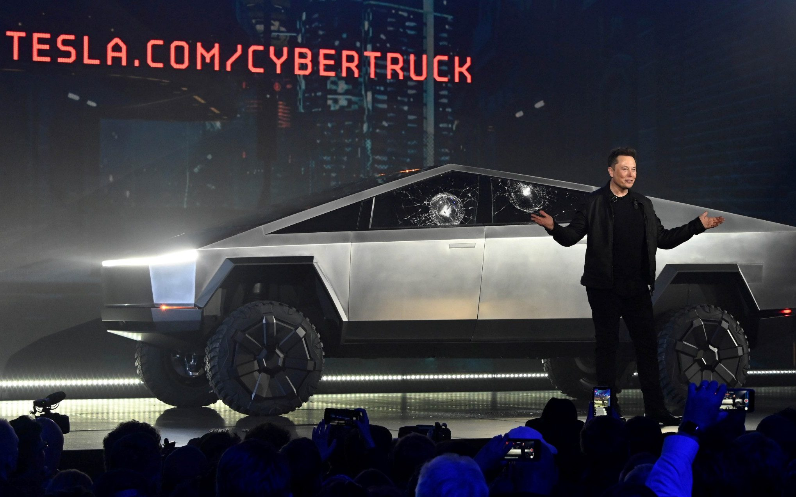

Cybertruck
2012-ben és 2013-ban Elon Musk kijelentette, szeretne egy olyan légrugós futóművel rendelkező pick-upot építeni, ami az elképzelései szerint a Ford F-250-hez hasonlítana. 2014 elején Musk 4-5 évet jósolt, mielőtt elkezdhetnek dolgozni az új autón.
2016 közepén Musk kijelentette, egy újfajta pick-upot szándékozik készíteni, és utalt rá, hogy ugyanazt az alvázat használják majd egy furgonhoz és a pick-uphoz is. 2017 végén úgy nyilatkozott, az autó méreteiben legalább akkora lesz, mint a Ford F-150, hogy elég nagy legyen ahhoz, hogy teljesen megváltoztassa mindazt, amit korábban a platós kisteherautókról gondoltunk. A Tesla Semi és Tesla Roadster bemutatóján, 2017 novemberében, közzétettek egy képet egy olyan pick-upról, amely képes egy másik pick-upot is elszállítani.
2019 márciusában, a Tesla Model Y bemutatóját követően Elon Musk megosztott egy beharangozó képet egy cyberpunk vagy Blade Runner stílusú járműről, amelynek formája egy futurisztikus, péncélozott katonai járműre hasonlít.
A hivatalos bemutatóra 2019. november 21-én került sor a Tesla Design Stúdióban, a SpaceX székhelye mellett, Los Angelesben – ugyanabban az évben, hónapban és helyszínen, ahol a Blade Runner film játszódik.
